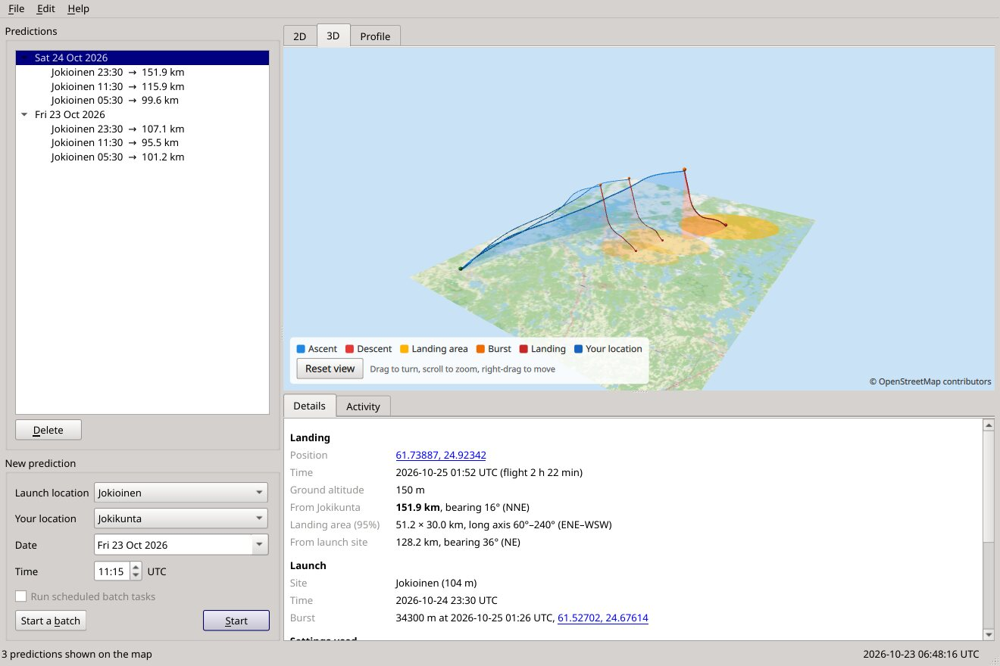
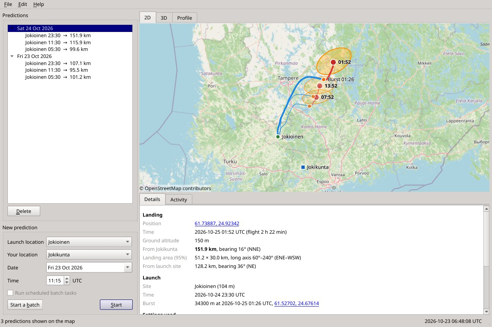
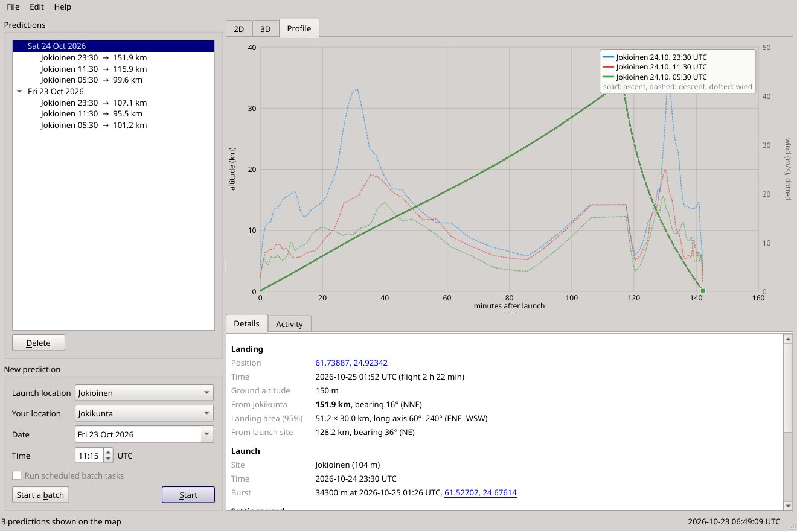
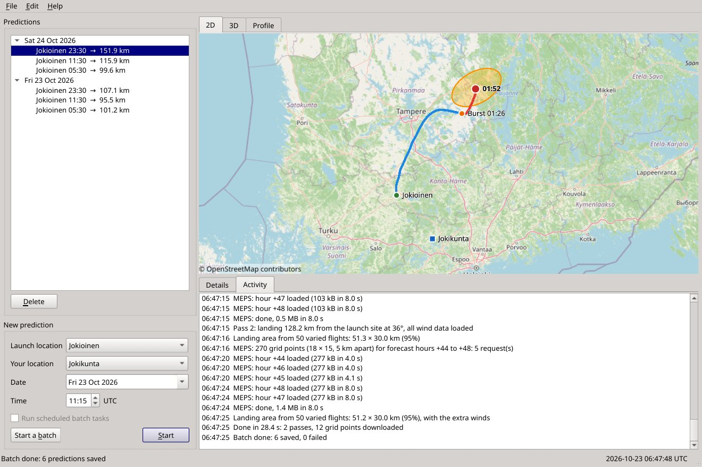

Map, 3D and profile
The flight on an OpenStreetMap map, in 3D over the terrain, or as an altitude profile with the winds it met. Predictions close to you are shown in bold.
For radiosonde hunters
Sonde Predict flies the weather balloon through the forecast winds, second by second, and shows you the track, the burst and where the sonde comes down — with the distance from your door. So you know at a glance whether a launch is worth the drive.
Free software (GPL v3). Windows 10/11 and Linux, 64-bit. No account, no adverts.

The flight on an OpenStreetMap map, in 3D over the terrain, or as an altitude profile with the winds it met. Predictions close to you are shown in bold.
Inside the Nordic area it averages MET Norway's 2.5 km MEPS model, on its own 65 levels, with ECMWF's global forecast — better than either alone. ECMWF covers the rest of the world.
Checked against FMI soundings and against 45 Jokioinen flights that hunters' receivers followed to the ground. The balloon defaults come from hundreds of real flights.
Fifty varied flights, each with a wind error as large as the forecasts' real errors, show where the sonde will come down. Checked on real flights: about 95 % land inside the 95 % area.
Batches cover several launch sites with their own launch times and their own balloons, days ahead, and can repeat on their own while the program is open.
Export to GPS and phone apps as GPX, run it from the command line, and read what it is doing line by line in the activity log. It tells you when a new version is out.



We predicted 45 real flights from Jokioinen (8–22 October 2026) with the winds available at launch time and compared them with where SondeHub's receivers last heard each sonde.
| Balloon settings | Typical landing error | Worst 10 % |
|---|---|---|
| Before: generic values | 13.7 km | 27 km |
| Now: the station's recent flights, measured ascent and descent | 8.8 km | 17 km |
| If each balloon's burst were known in advance | 6.5 km | 12 km |
Balloons from one station vary (burst altitudes 31–36 km at Jokioinen), and the forecast is never perfect, so the landing area matters as much as the point. Other stations were checked the same way: Tallinn 5 km, Stavanger 6 km typical error; stations with slow parachute descents drift longer and are harder (Greifswald about 22 km), and their landing areas are larger to match. The full comparison — against soundings, by forecast lead time, per wind model and per station — is in the source.
Sonde Predict started in 2016 as a small Python 2 program for one question: is the
sonde from Jokioinen worth chasing today? It downloaded GFS GRIB files from NOAA, ran them
through wgrib2, and showed the flight in Google Earth. It worked for years,
until Python 2, the data server and Google Earth all moved on, and only a zip file was
left.
In 2026 it was rebuilt from that zip: the same idea and the same workflow, now in C++ and Qt, on Windows and Linux, with its own map and 3D view, better winds and a flight model tuned on real flights.
On Linux, make the AppImage executable (chmod +x) and run it. Coming from v3?
File → Import Sonde Predict v3 settings brings your locations, balloon and batch along.